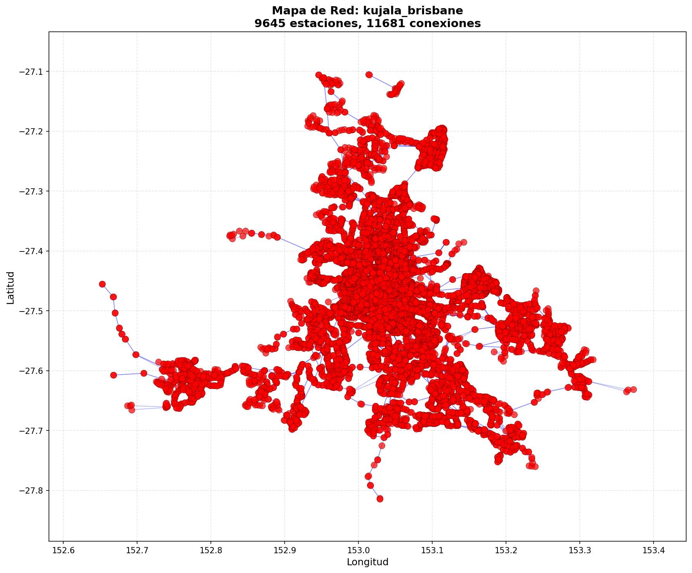

Reporte de Análisis: kujala_brisbane
Mapa de la Red

Métricas Calculadas
n_nodos: 9645
n_aristas: 11681
grado_promedio: 2.4221876620010367
fraccion_gigante: 0.9620528771384137
longitud_camino_promedio: 33.68593586367807
clustering_promedio: 0.03143154940424838
r_T: 0.21119751166407466
C_G: 2.268728906702052e-05
robustez_grado_20pct: 0.008916537065837222
robustez_aleatorio_20pct: 0.37034733022291344